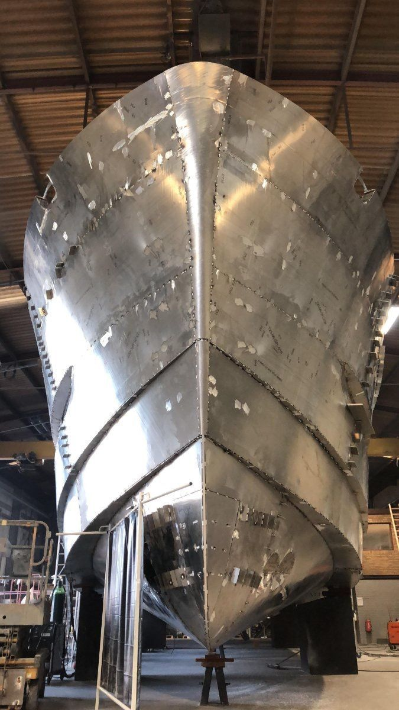
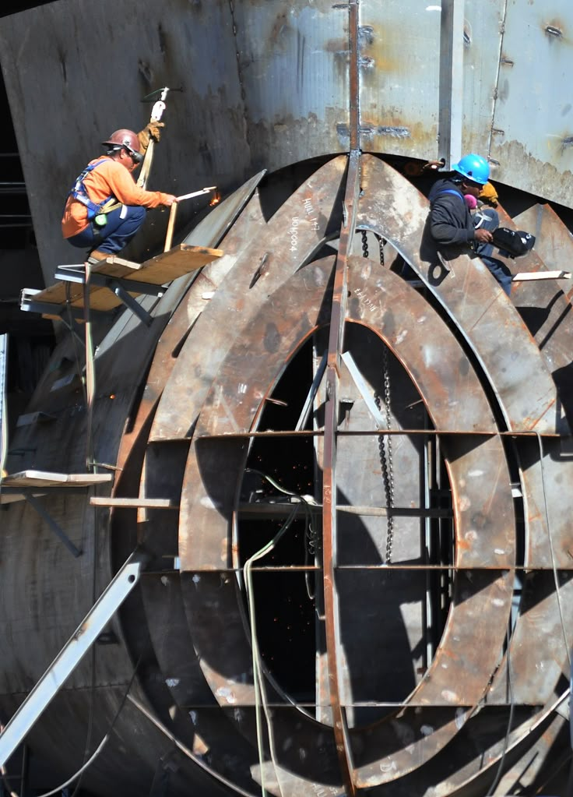

一、船舶套料问题的完整描述
1.1 什么是套料
套料，也称排样或排料，是把一批待切割零件合理安排到一张或多张原材料板材上的过程。可以把它理解为「在有限钢板上摆放不规则拼图」：零件之间不能重叠，零件不能超出钢板边界，同时还要保留切割间距、板边距离和设备加工空间。
完成零件摆放后，软件还要决定从哪里开始切、先切哪个孔、后切哪条外轮廓、切割头如何移动、是否允许两件零件共用一条切割边，以及最终生成什么格式的数控程序。因此，工业套料同时包含零件布局、工艺编制、路径规划和设备编程。
套料结果会影响四类成本：
| 成本类型 | 具体内容 | 套料产生的影响 |
|---|---|---|
| 材料成本 | 钢板采购、余料和废料 | 零件排布越合理，可用面积越高 |
| 时间成本 | 穿孔、切割、空移、换板 | 路径和顺序影响加工时间 |
| 质量成本 | 热变形、尺寸误差、坡口质量 | 零件距离和热量分布影响质量 |
| 管理成本 | 分拣、编码、找件和追溯 | 混合排样和编码错误增加管理难度 |
1.2 一个简单示例
假设船厂需要切割 10 块肋板，每块肋板面积约为 2 平方米。零件总面积为 20 平方米。船厂使用两张面积均为 12 平方米的钢板，总投入面积为 24 平方米，则理论材料利用率为：
\[ U=\frac{20}{24}=83.33\% \]
这里的 16.67% 不能全部视为真正废料，其中可能包括可重复使用的余料、切割间距、板边安全区和形状无法填充的零散区域。
若算法通过旋转零件、将小零件放入凹槽、优化板材组合，将相同零件放入一张面积 22 平方米的可用板材组合中，则利用率为：
\[ U=\frac{20}{22}=90.91\% \]
利用率提高了 7.58 个百分点。不过，如果新方案增加了大量穿孔、形成严重热集中，或者将不同分段的零件混在一起，它的综合生产成本仍有可能更高。这就是船舶套料需要多目标优化的原因。
1.3 船舶套料的决策内容
对每一个零件，软件至少要决定六件事：选择哪块钢板；确定零件在钢板上的横向和纵向位置；确定零件旋转角度；判断是否允许镜像；确定它与相邻零件是否共边；确定切割时间顺序。
如果一批任务有 1000 个零件，每个零件仅考虑 10 个候选位置和 4 个旋转方向，理论组合数量已经达到：
\[ (10\times4)^{1000}=40^{1000} \]
计算机无法通过逐一枚举找到最优方案，因此需要几何算法、启发式规则和智能优化算法共同缩小搜索范围。
1.4 为什么船舶零件特别难排

船舶零件经常呈现长条形、弯曲形、带多个孔洞或具有大型凹槽。它们与规则矩形的排布难度差异很大。
例如，一个长而弯曲的肋板可能在周围留下多个狭长区域。理论上这些区域还有面积，但未必能放入其他零件。材料利用率取决于可用形状，而不只取决于剩余面积。
此外，零件可能带有方向约束。船用钢板经过轧制后，不同方向的力学性能可能存在差异。部分结构件必须保持与钢板轧制方向一致，软件就不能为了节省材料任意旋转。
带坡口的零件还存在正反面问题。零件镜像后，几何轮廓看起来仍然相同，但坡口方向和焊接关系可能发生变化。系统必须同步转换工艺属性。
1.5 问题边界

本项目重点研究二维船舶平面零件。其输入通常来自二维图纸、生产设计数据库或三维模型展开结果。项目不需要重新完成整艘船的总体设计，但必须正确继承设计系统提供的零件语义。
输入数据至少包括：
| 数据类别 | 必要字段 |
|---|---|
| 几何数据 | 外轮廓、内孔、开口、基准点 |
| 材料数据 | 材质、板厚、炉批号要求 |
| 项目数据 | 船号、分段号、托盘号 |
| 工艺数据 | 坡口、割缝、标记、桥接要求 |
| 方向数据 | 允许角度、轧制方向、正反面 |
| 生产数据 | 数量、优先级、计划时间 |
| 设备数据 | 幅面、速度、功率、控制器格式 |
输出包括套料图、材料消耗清单、余料清单、切割路径、NC 程序、喷码内容、加工工时估算和质量追溯关系。
二、数学模型与概念解释
2.1 集合和决策变量
设共有 \(n\) 个待加工零件：
\[ P=\{P_1,P_2,\ldots,P_n\} \]
共有 \(m\) 张候选钢板：
\[ S=\{S_1,S_2,\ldots,S_m\} \]
对每个零件 \(P_i\)，软件需要计算：
\[ (x_i,y_i,\theta_i,q_i,s_i) \]
其中：\(x_i,y_i\) 表示零件参考点在钢板上的坐标；\(\theta_i\) 表示旋转角度；\(q_i\) 表示是否镜像；\(s_i\) 表示所选钢板。这组变量称为决策变量，因为算法要通过改变它们寻找更好的方案。
2.2 可行解与最优解
满足全部强制约束的方案称为可行解。例如，零件不重叠、没有超出钢板、材质板厚匹配、旋转方向合法。可行解可能有很多。算法需要从中选择成本更低的方案，这个过程称为优化。
工程中通常难以证明已找到数学意义上的全局最优解。因此，工业软件更常追求在有限时间内生成高质量、稳定、可执行的近似最优解。
2.3 分配约束
定义二进制变量：
\[ z_{ij}=\begin{cases}1,&零件i放在钢板j\\0,&其他情况\end{cases} \]
每个零件必须且只能被安排一次：
\[ \sum_{j=1}^{m}z_{ij}=1 \]
如果零件数量要求为两件，则应在输入阶段将其展开成两个独立实例，或者引入整数数量变量。
2.4 边界约束
零件经过平移和旋转后必须完全位于钢板有效区域：
\[ T(P_i,x_i,y_i,\theta_i)\subseteq S_j^{effective} \]
其中 \(T\) 表示几何变换，\(S_j^{effective}\) 表示有效加工区域。有效区域通常小于钢板外形，因为要扣除板边安全距离、夹具区域和缺陷区域。
例如，钢板尺寸为 12 米乘 3 米，要求四周保留 20 毫米，则有效区域约为：
\[ (12-0.04)\times(3-0.04) \]
算法必须在这个缩小后的区域内排布零件。
2.5 防重叠约束
任意两个放在同一钢板上的零件，其内部区域不能相交：
\[ \operatorname{Interior}(P_i)\cap\operatorname{Interior}(P_k)=\varnothing \]
实际切割还需要考虑割缝。假设割缝宽度为 4 毫米，两个零件之间通常要预留割缝和安全间距。算法可以将零件轮廓向外扩张，再对扩张后的轮廓进行碰撞检查。
这种几何扩张在数学上称为 Minkowski 和：
\[ P_i^{+}=P_i\oplus B(r) \]
\(B(r)\) 是半径为 \(r\) 的圆形缓冲区域。外扩后的零件不重叠，原始零件之间就能保留规定距离。
2.6 旋转和镜像约束
每个零件拥有一个允许角度集合 \(\theta_i\in\Theta_i\)。普通零件可能允许 \(\Theta_i=\{0^\circ,90^\circ,180^\circ,270^\circ\}\)；受轧制方向限制的零件可能只允许 \(\Theta_i=\{0^\circ,180^\circ\}\)；带有明确正反面或坡口方向的零件可能禁止镜像 \(q_i=0\)。
这些限制会显著缩小可搜索方案，也可能降低理论材料利用率，但它们保证零件满足结构和焊接要求。
2.7 材料利用率
材料利用率定义为有效零件面积与投入钢板面积之比：
\[ U=\frac{\sum_i A(P_i)}{\sum_j u_jA(S_j)} \]
其中 \(u_j\) 表示钢板是否被使用。材料利用率存在口径问题：孔洞面积是否计入零件面积、边角余料是否计为废料、共边割缝如何计算，都会影响结果。项目必须建立统一口径，否则不同软件之间无法公平比较。
2.8 多目标函数
船舶套料可以采用以下综合目标：
\[ \min F=w_mC_m+w_cL_c+w_tL_t+w_pN_p+w_hC_h+w_sC_s+w_rC_r \]
| 变量 | 含义 | 影响 |
|---|---|---|
| \(C_m\) | 材料成本 | 使用钢板越多，成本越高 |
| \(L_c\) | 有效切割长度 | 影响耗材和加工时间 |
| \(L_t\) | 空行程 | 切割头移动但不加工的距离 |
| \(N_p\) | 穿孔次数 | 穿孔耗时并损耗喷嘴 |
| \(C_h\) | 热风险 | 热量集中可能导致变形 |
| \(C_s\) | 分拣成本 | 不同分段混料会增加找件 |
| \(C_r\) | 余料成本 | 形状破碎的余料难以再利用 |
\(w_m,w_c,\ldots\) 是权重。材料紧张时可以提高 \(w_m\)，交期紧张时可以提高加工时间相关权重。